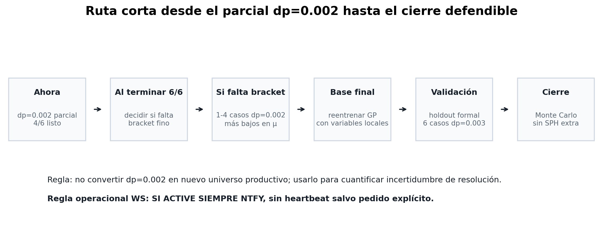

Lo que viene: de resultados preliminares a cierre defendible
Esta página es deliberadamente operativa: separa qué se puede mostrar hoy, qué falta para cerrar la incertidumbre de resolución y qué pasos quedan antes de Monte Carlo y tesis final.
Resumen corto
- Ahora mismo
- 4/6 dp=0.002 faltan 2 high-H
- Cierre base
- 6-12 sims según resultado fino
- Holdout
- 6 sims validación formal dp=0.003
- Monte Carlo
- 0 SPH corre sobre GP final
- GP local actual
- 0.861 accuracy LOO preliminar
- Decisión
- no mínimo correr sólido, por etapas
Con 4/6 checks finos ya se puede presentar una conclusión preliminar: cerca del umbral, dp=0.003 es conservador respecto de dp=0.002 en los pares disponibles. Para cierre formal todavía se necesita terminar 6/6 y decidir si se buscan 1-4 puntos finos más bajos en fricción.
Ruta de decisión


Caminos según el 6/6
Si los 6/6 quedan estables
La lectura fuerte es que los fallos marginales de dp=0.003 estaban dentro de la banda de resolución. Conviene correr 1-4 puntos dp=0.002 con menor μ para recuperar el lado de falla fino.
Si aparece un fallo fino
Mejor: queda bracket fino directo en esa zona. Después se reentrena GP local, se diseña holdout y se prepara Monte Carlo sin lanzar una campaña grande innecesaria.
Qué no se debe vender todavía
No vender una probabilidad final de falla antes del holdout y Monte Carlo. Sí se puede vender una confiabilidad por capas: convergencia operativa, benchmark, sanity de contacto, coherencia analítica, AL8 y sensibilidad parcial dp=0.002.
La tesis no termina con estos 4/6. Queda muy bien encaminada para presentar avance, pero el cierre defendible requiere terminar checks, reentrenar/validar y correr Monte Carlo sobre el GP final.